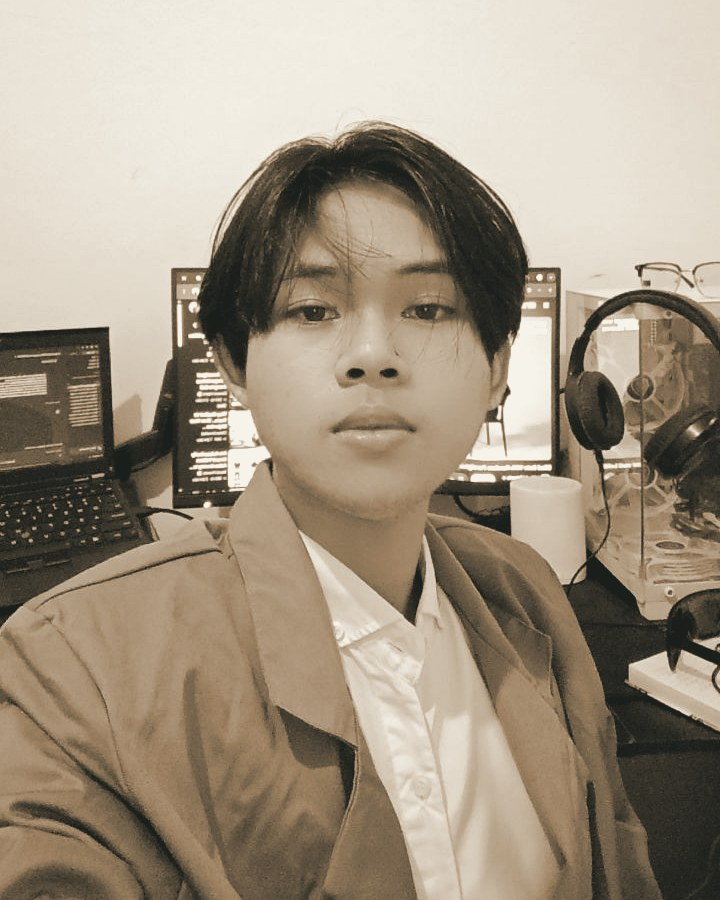

Tentang Saya
Belajar rekayasa perangkat lunak dengan proyek nyata sebagai kelasnya.
Saya Ketut Agus Suardita, mahasiswa Program Studi Teknologi Rekayasa Perangkat Lunak (D4) di Universitas Pendidikan Ganesha. Sebagian besar yang saya tahu tentang membangun perangkat lunak justru datang dari luar kelas — dari mengerjakan sistem administrasi desa, situs untuk pelaku wisata lokal, sampai prototipe riset kampus yang harus siap didemokan dalam hitungan minggu.
Tumbuh di Bali Utara membuat saya tertarik membangun hal-hal yang berhubungan langsung dengan tempat ini: digitalisasi layanan desa, promosi wisata lokal, dan produk yang mengangkat elemen budaya Bali ke dalam antarmuka modern.
Pendidikan
Sedang berjalan
D4 Teknologi Rekayasa Perangkat Lunak
Universitas Pendidikan Ganesha (Undiksha), Bali. Fokus pada pengembangan aplikasi web dan mobile, basis data, dan praktik rekayasa perangkat lunak melalui proyek kolaboratif dan tugas akhir mata kuliah.
2022–2025
SMK TI Bali Global Singaraja
Jurusan Software and Game Development. Lulus sebagai Best Graduate (siswa terbaik) di jurusan, dengan pencapaian akademik dan proyek yang konsisten sepanjang masa studi.
Keahlian & Peralatan
BAHASA PEMROGRAMAN
- C
- C++
- PHP
- JavaScript
- Dart
- SQL
FRAMEWORK & LIBRARY
- Laravel
- React
- Next.js
- Flutter
ALAT KERJA
- Git & GitHub
- Postman
- Figma
- Photoshop
- Logisim
- Vercel
- Railway
SOFT SKILLS
- Komunikasi
- Pemecahan masalah
BAHASA
- Indonesia
- English
Cara saya bekerja
Saya lebih suka mengerjakan sesuatu bertahap dan bisa dicoba di setiap langkah, dibanding menunggu semuanya "sempurna" sebelum ditunjukkan. Proyek saya biasanya berjalan dari rancangan antarmuka, ke integrasi backend, sampai siap dipakai pengguna sebenarnya — bukan berhenti di purwarupa.
Di luar layar
Ketertarikan saya pada budaya Bali sering muncul dalam proyek yang saya kerjakan — mulai dari sistem untuk desa, promosi wisata lokal di Buleleng, sampai produk yang mengangkat motif dan tradisi Bali ke dalam bentuk digital.